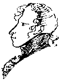

|
|
 |
|
НИКОЛАЕВСКОМУ ГОРОДСКОМУ ГОЛОВЕ
Чайке В.Д.
№ 7 от 16. 05. 2001 г
16 декабря 2001 г. исполняется 80 лет со дня рождения Николая Алексеевича Троянова, актера, драматурга, режиссера, заслуженного артиста Грузии, горожанина 2000 г. в номинации "Искусство", бессменного (38 лет!) руководителя уникального Народного театра в Николаеве, закончившего с отличием школу-студию им. М.С. Щепкина при Малом театре в Москве, достойного ученика великих В. Пашенной, И. Ильинского, К. Зубова, Е. Турчаниновой и Н. Анненкова, подлинного Подвижника Театра и Жреца Прекрасного!
Первый Народный театр, организованный Трояновым, действовал в Тбилиси с 1952 по 1960 гг. и, судя по прессе, пользовался большим успехом. С переездом в Николаев в 1960 г. Н.А. Троянов создает и здесь Нродный театр, который действует непрерывно с февраля 1963 г. За эти годы им поставлено и сыграно 92 пьесы, в том числе 40 - по произведениям мировой классики.
Театр Троянова многократно признан лауреатом различных смотров и фестивалей народных театров Украины. В частности, в 1996 г. в г. Очакове за спектакль по пьесе Н.А. Троянова "Кассандра и Кретин" театр был признан лауреатом всеукраинского фестиваля "От Гипаниса до Борисфена". Четырежды театр подтверждал звание Народного перед авторитетными комиссиями из Киева постановкой таких пьес, как "Вечно живые", "Король Лир", "С любовью не шутят!", "С широкой масленицей!". Трижды Народный театр Троянова награждался званием "Лауреат", с вручением знаков ВЦСПС и "За шефство над вооруженными силами СССР", а также грамотой командующего Черноморским флотом вице-адмирала Ховрина за постановку в николаевском ДОФе пьесы "Адмирал Корнилов".В репертуаре Народного театра пьесы, за которые не брались и профессиональные театры, кроме вышеназванных: "С любовью не шутят" Кальдерона, "Гроза" и "Правда хорошо, а счастье лучше" А. Островского, "Ведьма" А. Чехова, "Немая жена" А. Франса, "Верните деньги за обучение" Ф. Каринти, "Причуды Белисы" Лопе де Вега и др. Спектакль "Электра" Софокла играли в Ольвии, среди раскопок античного города, на месте, где предположительно мог находиться древний театр. "Король Лир" Шекспира был поставлен без единой вымарки текста. Спектакль длился четыре часа, но зрители не уходили. Пьеса "Монсерра" Э. Роблеса была переведена на 27 языков мира, но почему-то в Советском Союзе нигде не ставилась, Народный театр Троянова и её сыграл с большим успехом. В 2000 г. театром сыграны пьесы "Моцарт и Сальери", "Барышня-крестьянка" А. Пушкина, "Психопат" В. Шукшина. В этом году сыграна весьма актуальная комедия В. Сологуба "Чиновник", которая практически не игралась с
XIX в.Как драматург Н.А. Троянов создал свыше 15 пьес, из которых 7 увидели свет рампы. На темы истории города Николаева им написано 4 пьесы: драма "Гнев" о поэте А. Гмыреве (спектакль выдержал более 40 постановок на сцене театра им. В.П. Чкалова); одноактная драма "Рассказ о первых студентах" об открытии в Николаеве учительского института в 1911 г., спектакль был показан не только в Николаеве, но и в Киеве и был отмечен Министром образования Украины; драма "Магда" о действии николаевского подполья в годы ВОВ во главе с разведчиком В.А. Лягиным, при участии Эмилии и Магды Дуккарт, поставлена в Русском драмтеатре в канун 55-й годовщины Победы; написана драма "Ольвия", премьера части спектакля прошла с большим успехом в Пушкинском клубе 22 апреля т.г. Пьесы Троянова изданы в журналах и при содействии Народно-демократической партии в книге "Три пьесы", НФ НаУКМА, 2000 г. О нем и его театре написано немало статей в местной прессе. Последняя статья Н. Музыки "Послушник театра или Святая сцена Николая Троянова" в газете "Вечерний Николаев" от 16 марта 2000 г. прилагается к настоящему письму в копии.
Народный театр стал подлинной Театральной школой Троянова. Из сотен учеников этой школы можно назвать в Николаеве: Олега Игнатьева, ныне главный режиссер Украинского театра драмы и музыкальной комедии, заслуженного деятеля культуры Украины; Надежду Игнатьеву, заслуженную артистку Украины, Сергея Чверкалюка, артиста Русского областного драмтеатра; Наталью Малышевскую и Ларису Злочевскую артистов Театра кукол; в Киеве: Наталью Андрейченко, кинорежиссера студии им. А.П. Довженко и актрису Ирину Бойко (фильм "Шамара"), Инну Коваленко выпускницу Театрального института им. И.К. Карпенко-Карого; в Харькове: Лидию Дебривную, актрису театра им. Т.Г. Шевченко, ныне работает в Праге; в Москве: актрису Марину Миронову, Татьяну Юраш, начинающего кинорежиссера; в Санкт-Петербурге: Сергея Русскина, актера, режиссера и педагога актерского мастерства Государственного театра "Комедианты" и актрису этого театра Татьяну Пахомову, Игоря Лифанова, актера БДТ им. Г.А. Товстоногова, Александра Москвина, бывшего режиссера и актера театра им. Ленсовета, ныне проживающего и работающего в Германии. Не все из учеников театра Троянова стали профессиональными актерами, но каждому, кому пришлось прожить часть своей жизни в театре, были привиты любовь к труду, к раздумью, к поиску театральной эстетики и, в конечном итоге, - к поиску Прекрасного, как великого смысла жизни!
Троянов Николай Алексеевич родился 16 декабря 1921 года в селе Косицкое Новгородской области. После окончания средней школы служил в рядах Советской армии, окончил полковую школу в г. Шепетовка на Украине. В годы Отечественной войны стал офицером и участвовал в боях под Киевом, Ленинградом, где в лесах Новгородщины по его инициативе был создан партизанский отряд, после освобождения Ленинграда воевал в рядах Советской Армии в Польше, где и был тяжело ранен. Награжден орденами Отечественной войны
I-й степени и Красной Звезды, 18 медалями, в том числе "За оборону Киева", "За оборону Ленинграда", "Ветеран труда". После войны Троянов с отличием окончил театральное училище им. М.С. Щепкина при Малом театре в Москве (1950). Его сокурсниками и друзьями были Михаил Ульянов, Павел Луспекаев, Евгений Весник и Николай Тимофеев. В 1950-60гг. - актер Тбилисского русского театра им. А.С. Грибоедова. Сыгранные в те годы роли: Треплева в "Чайке" Чехова, Николки в "Днях Турбиных" Булгакова и др. сделали его имя популярным в Грузии. В 1957 г. ему присвоено почетное звание "Заслуженный артист Грузии". В Тбилиси он организовал самодеятельный театр, в котором прошла его первая пьеса - "Мост". С 1960 г. - актер Николаевского русского драматического театра им. В.П. Чкалова. Здесь им сыграны роли: Сергея в "Иркутской истории" Арбузова, Мортимера в "Марии Стюарт" Шиллера, дона Саллюстия в "Рюи Блаз" Гюго, Балясникова в "Сказках старого Арбата" Арбузова, Рихарда Зорге в "Пресс-атташе в Токио" Маклярского и др. В 1963 году Троянов создает театральную студию при Доме культуры строителей, с 1969 г. ей присвоен статус Народного драматического театра, который и стал главным делом всей его жизни.Полная история театра нашего города еще не написана, но в ней есть немало замечательных страниц, начиная с постановки здесь представлений еще при основании города Г.А. Потемкиным, В.И. Далем в 1821-1822 гг. двух одноактных пьес, им здесь написанных. В 1840 г. здесь был построен театр, а в 1846 г. великий М.С. Щепкин играл в нем городничего в комедии Н.В. Гоголя "Ревизор". Здесь выступали Ф. Шаляпин, Л. Собинов, М. Дальский, К. Варламов, В. Давыдов, М. Савина, В. Комиссаржевская, Вс. Мейерхольд и др. В Николаеве зародился уникальный в мировой культуре украинский театр корифеев в лице М. Крапивницкого, П. Саксаганского, М. Старицкого, Н. Садовского, М. Заньковецкой, достойным продолжателем которого в наше время стал Николаевский украинский театр драмы и музыкальной комедии. Здесь на протяжении 1879-1911 гг. действовал выдающийся подвижник театра, драматург, писатель, историк, журналист, общественный деятель, Г.Н. Ге, брат известного художника-передвижника Н.Н. Ге., который за 25 лет до К. Станиславского создал здесь основы сценического реализма (его брошюра "О драматическом искусстве" хранится в Областной библиотеке). В 1900 г. впервые здесь поставлена опера "Катерина", написанная на текст Т.Г. Шевченко, николаевским композитором и историком Н.Н. Аркасом. История русского драмтеатра с 1934 г. по 1993 г. описана в книге Ирины Давыдовой "Театр города корабелов", Николаев, 1994. Несомненно, что уникальный эксперимент всей жизни Николая Алексеевича Троянова, его Народный театр, станет подлинным украшением истории театров не только города Николаева, но и Украины, в силу обстоятельств, связанных не только с долголетием театра. Успех эксперимента, поставленного Н.А. Трояновым, основан, во-первых, на прекрасной театральной школе Малого театра, главным девизом которой стал завет М.С. Щепкина "Священнодействуй или убирайся вон! ", во-вторых, на масштабности видения Трояновым и использования им главных достижений мировой культуры и, в-третьих, на недюжинных организаторских, творческих способностях лично Н.А. Троянова и некоей свободе творчества драматурга, режиссера и артистов в условиях неоплачиваемого деньгами успеха или неуспеха Народного театра, как собрания людей, которых А.С. Пушкин называл "...счастливцами праздными, пренебрегающими презренной пользой, единого Прекрасного жрецов"! Другая сторона успеха заключается в том, что город Николаев и Николаевщина стала для Николая Алексеевича родной землей, которой он посвятил лучшую часть своей, весьма плодотворной, жизни. Активное действие Народного театра Н.А. Троянова в наше нелегкое время доказывает, что в нашем городе есть спрос на возвышенное и духовное, как со стороны его жителей, так и со стороны городских и областных властей, партий, общественных организаций и город Николаев вполне может гордиться этим!
Учитывая изложенное, Пушкинский клуб, Почетным членом которого является Н.А. Троянов, на своем общем собрании 22 апреля 2001 г. принял единодушное решение просить Вас, Владимир Дмитриевич, и членов Николаевского городского совета рассмотреть вопрос и присвоить звание Почетного гражданина города Николаева Николаю Алексеевичу Троянову!